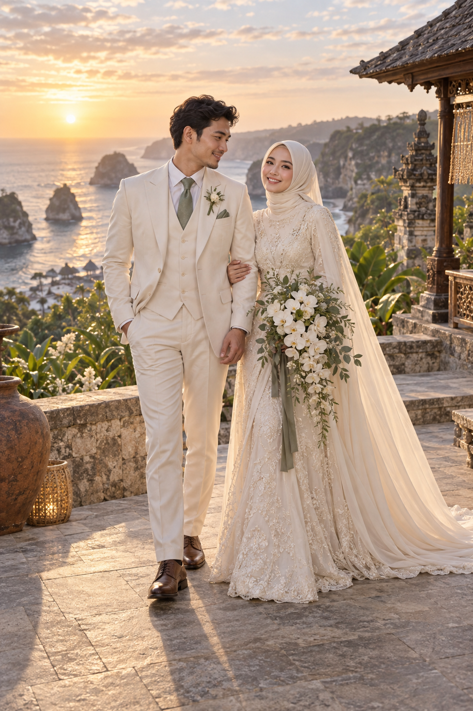

Bima Pradipta
Bapak Hendra Pradipta
& Ibu Ratna Kusumawati
DAPRITA · TRAVEL DOCUMENT
✦The Wedding Journey of
ONE-WAY TICKET · NO RETURN
Pack your joy and join our most beautiful journey across a lifetime.
TRAVEL NOTE 01
“Every great journey becomes more meaningful when we find someone worth coming home to.”WITH LOVE, ARUNA & BIMA
TRAVEL DOCUMENT 02

Bapak Hendra Pradipta
& Ibu Ratna Kusumawati
Bapak Surya Wibisono
& Ibu Larasati Ayuningrum
NEXT DESTINATION
TRAVEL DOCUMENT 03
Senin, 18 Oktober 2027 · 09.00 WITA
Amarta Garden Pavilion, Ubud
Senin, 18 Oktober 2027 · 17.00 WITA
Amarta Garden Pavilion, Ubud
TRAVEL DOCUMENT 04
Sebuah pertemuan singkat membuka perjalanan yang tak pernah kami rencanakan.
Dari kota ke kota, kami belajar bahwa rumah bukan tempat, melainkan seseorang.
Dengan restu keluarga, kami memilih tiket satu arah menuju selamanya.
TRAVEL DOCUMENT 05
PACKING GUIDE
Rayakan hari kami dengan warna alam Nusantara: forest, sage, warm ivory, terracotta, atau sand.
FINAL TRAVEL DOCUMENT
Konfirmasikan perjalanan Anda sebelum 10 Oktober 2027.
TRAVEL FUND
Kehadiran Anda adalah hadiah terbaik. Apabila ingin mengirimkan tanda kasih, dapat melalui rekening berikut.